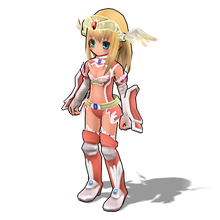
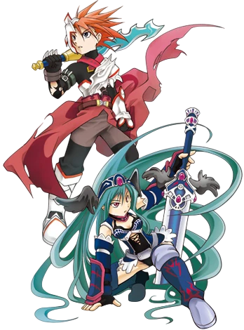
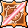
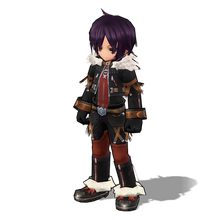

Swordsman Master
Swordsman Master
 Mr. Bong
Mr. Bong
War God set
Lv 45

Other options
- Alt head accessory
How to get
- All pieces from Arus's Mother, a reward of the Lv 45 Armor Quest
Expert job · Fighter
A pure damage job whose skills hit hard and strike every enemy around it.

Requirement: STR 30 or higher and Job Level 30 or higher as a Swordsman.
Talk to the Swordsman Master and ask to change jobs. He asks you to get a certificate from Mr. Bong in the Iron City Cafe, Lower Part of Iron City.
Travel to the Lower Part of Iron City.
Enter the Iron City Cafe and talk to Mr. Bong. Choose to become a Blade Master. He asks you to bring 1 ×  Black Vinegar.
Black Vinegar.
Hunt South Pole Pefang in Ghost Shelter or CockKo Baby on Momo Plains for the  Black Vinegar.
Black Vinegar.
Return to Mr. Bong in the Iron City Cafe (Lower Part of Iron City) and hand over the  Black Vinegar. Talk to him again to get the quest Like the Wind (Party).
Black Vinegar. Talk to him again to get the quest Like the Wind (Party).
Travel to Iron Volcano. Defeat Lava Pururu ×5 and Gigo ×3 within 10 minutes.
Return to Mr. Bong in the Iron City Cafe and talk to him. He gives you a  Certificate(Quest).
Certificate(Quest).
 Iron StomachPassive · Max Lv 5
Iron StomachPassive · Max Lv 5| Lv | Food recovery bonus | Food use time reduction |
|---|---|---|
| 1 | +15% | 15% |
| 2 | +20% | 20% |
| 3 | +25% | 25% |
| 4 | +30% | 30% |
| 5 | +35% | 35% |
 MeditationActive · Max Lv 5
MeditationActive · Max Lv 5Restores HP with fixed Holy healing.
| Lv | SP | Cast time | Cooldown | HP recovery |
|---|---|---|---|---|
| 1 | 11 | 0 sec | 0 sec | 25 |
| 2 | 24 | 0 sec | 0 sec | 50 |
| 3 | 38 | 0 sec | 0 sec | 75 |
| 4 | 53 | 0 sec | 0 sec | 100 |
| 5 | 69 | 0 sec | 0 sec | 125 |
Two-Handed Sword MasteryPassive · Max Lv 5Improves minimum ATK while a two-handed sword is equipped.
| Lv | Minimum ATK |
|---|---|
| 1 | +30 |
| 2 | +35 |
| 3 | +40 |
| 4 | +45 |
| 5 | +50 |

Head CrusherActive physical attack · Max Lv 5| Lv | SP | Cast time | Cooldown | Normal damage | Insect damage |
|---|---|---|---|---|---|
| 1 | 24 | 2 sec | 0.5 sec | 220% | 620% |
| 2 | 24 | 2 sec | 0.5 sec | 230% | 630% |
| 3 | 24 | 2 sec | 0.5 sec | 240% | 640% |
| 4 | 24 | 2 sec | 0.5 sec | 250% | 650% |
| 5 | 24 | 2 sec | 0.5 sec | 260% | 660% |
Has a chance to remove status effects by force, regardless of whether they are beneficial or harmful.
| Lv | SP | Cast time | Cooldown |
|---|---|---|---|
| 1 | 6 | 0 sec | 0.5 sec |
| 2 | 6 | 0 sec | 0.5 sec |
| 3 | 6 | 0 sec | 0.5 sec |
| 4 | 6 | 0 sec | 0.5 sec |
| 5 | 6 | 0 sec | 0.5 sec |
Shouts at nearby enemies and attempts to apply Stun for 5 seconds.
| Lv | MP | SP | Cast time | Cooldown | Stun chance | Duration |
|---|---|---|---|---|---|---|
| 1 | 6 | 12 | 3.5 sec | 1 sec | 25% | 5 sec |
| 2 | 6 | 14 | 3 sec | 1 sec | 30% | 5 sec |
| 3 | 6 | 16 | 2.5 sec | 1 sec | 35% | 5 sec |
| 4 | 6 | 18 | 2 sec | 1 sec | 40% | 5 sec |
| 5 | 8 | 20 | 1.5 sec | 1 sec | 45% | 5 sec |
| Lv | SP | Cast time | Cooldown | Normal damage | Plant damage |
|---|---|---|---|---|---|
| 1 | 24 | 2 sec | 0.5 sec | 220% | 620% |
| 2 | 24 | 2 sec | 0.5 sec | 230% | 630% |
| 3 | 24 | 2 sec | 0.5 sec | 240% | 640% |
| 4 | 24 | 2 sec | 0.5 sec | 250% | 650% |
| 5 | 24 | 2 sec | 0.5 sec | 260% | 660% |
Spins and deals physical damage to enemies around the caster.
| Lv | SP | Cast time | Cooldown | Damage rate |
|---|---|---|---|---|
| 1 | 10 | 0.5 sec | 3 sec | 250% |
| 2 | 16 | 1 sec | 3 sec | 300% |
| 3 | 22 | 1.5 sec | 3 sec | 350% |
| 4 | 28 | 2 sec | 3 sec | 400% |
| 5 | 34 | 2.5 sec | 3 sec | 450% |
 Eagle StrikeActive physical attack · Max Lv 5
Eagle StrikeActive physical attack · Max Lv 5| Lv | SP | Cast time | Cooldown | Normal damage | Water Animal damage |
|---|---|---|---|---|---|
| 1 | 24 | 2 sec | 0.5 sec | 220% | 620% |
| 2 | 24 | 2 sec | 0.5 sec | 230% | 630% |
| 3 | 24 | 2 sec | 0.5 sec | 240% | 640% |
| 4 | 24 | 2 sec | 0.5 sec | 250% | 650% |
| 5 | 24 | 2 sec | 0.5 sec | 260% | 660% |
 Battle EncouragementActive buff · Max Lv 5
Battle EncouragementActive buff · Max Lv 5| Lv | MP | SP | Cast time | Cooldown | ATK/MATK bonus | Duration |
|---|---|---|---|---|---|---|
| 1 | 5 | 5 | 6 sec | 1 sec | 20% of possessor base ATK/MATK | 20 sec |
| 2 | 10 | 12 | 5 sec | 2 sec | 25% of possessor base ATK/MATK | 25 sec |
| 3 | 15 | 20 | 4 sec | 3 sec | 30% of possessor base ATK/MATK | 30 sec |
| 4 | 20 | 27 | 3 sec | 4 sec | 35% of possessor base ATK/MATK | 35 sec |
| 5 | 25 | 35 | 2 sec | 5 sec | 40% of possessor base ATK/MATK | 40 sec |
| Lv | SP | Cast time | Cooldown | Normal damage | Bird damage |
|---|---|---|---|---|---|
| 1 | 24 | 2 sec | 0.5 sec | 220% | 620% |
| 2 | 24 | 2 sec | 0.5 sec | 230% | 630% |
| 3 | 24 | 2 sec | 0.5 sec | 240% | 640% |
| 4 | 24 | 2 sec | 0.5 sec | 250% | 650% |
| 5 | 24 | 2 sec | 0.5 sec | 260% | 660% |
 Beast JawbreakerActive physical attack · Max Lv 5
Beast JawbreakerActive physical attack · Max Lv 5| Lv | SP | Cast time | Cooldown | Normal damage | Animal damage |
|---|---|---|---|---|---|
| 1 | 24 | 2 sec | 0.5 sec | 220% | 620% |
| 2 | 24 | 2 sec | 0.5 sec | 230% | 630% |
| 3 | 24 | 2 sec | 0.5 sec | 240% | 640% |
| 4 | 24 | 2 sec | 0.5 sec | 250% | 650% |
| 5 | 24 | 2 sec | 0.5 sec | 260% | 660% |
Releases a short-range shockwave that deals Blow physical damage.
| Lv | SP | Cast time | Cooldown | Damage rate |
|---|---|---|---|---|
| 1 | 10 | 1 sec | 3 sec | 330% |
| 2 | 15 | 1 sec | 2.75 sec | 360% |
| 3 | 20 | 1 sec | 2.5 sec | 390% |
| 4 | 25 | 1 sec | 2.25 sec | 420% |
| 5 | 30 | 1 sec | 2 sec | 450% |
| Lv | SP | Cast time | Cooldown | Damage rate | Hits |
|---|---|---|---|---|---|
| 1 | 18 | 0.5 sec | 0.5 sec | 320% | 1 hit, or 2 hits against flying targets |
| 2 | 20 | 0.5 sec | 0.5 sec | 340% | 1 hit, or 2 hits against flying targets |
| 3 | 22 | 0.5 sec | 0.5 sec | 360% | 1 hit, or 2 hits against flying targets |
| 4 | 24 | 0.5 sec | 0.5 sec | 380% | 1 hit, or 2 hits against flying targets |
| 5 | 26 | 0.5 sec | 0.5 sec | 400% | 1 hit, or 2 hits against flying targets |
BerserkerPassive · Max Lv 5| Lv | Trigger HP threshold | ATK effect | Duration |
|---|---|---|---|
| 1 | 10% Max HP or lower | Current minimum and maximum ATK +100% | 30 sec |
| 2 | 15% Max HP or lower | Current minimum and maximum ATK +100% | 30 sec |
| 3 | 20% Max HP or lower | Current minimum and maximum ATK +100% | 30 sec |
| 4 | 25% Max HP or lower | Current minimum and maximum ATK +100% | 30 sec |
| 5 | 30% Max HP or lower | Current minimum and maximum ATK +100% | 30 sec |
Cold-Blooded BerserkPassive · Max Lv 5| Lv | Base control chance | Final control chance |
|---|---|---|
| 1 | 15% | 15% + Total INT percentage points |
| 2 | 20% | 20% + Total INT percentage points |
| 3 | 25% | 25% + Total INT percentage points |
| 4 | 30% | 30% + Total INT percentage points |
| 5 | 35% | 35% + Total INT percentage points |
Swordsman SpiritPassive · Max Lv 1| Possession slot | Main bonuses |
|---|---|
| Right hand | ATK/MATK +14%, S.HIT/L.HIT +14%, Max HP/MP/SP +5% |
| Left hand | ATK/MATK +7%, S.HIT/L.HIT +6%, DEF/M.DEF +14%, Max HP/MP/SP +7.5% |
| Accessory | ATK/MATK +8%, S.HIT/L.HIT +9%, S.AVOID +14%, Max HP/MP/SP +7.5% |
| Armor | ATK/MATK +5%, DEF/M.DEF +7.5%, Max HP/MP/SP +14% |
Enters a stance that reduces SP costs by 30% while active.
| Lv | MP | SP | Cast time | Cooldown | SP cost reduction | Duration |
|---|---|---|---|---|---|---|
| 1 | 30 | 30 | 2 sec | 1 sec | 30% | 60 sec |
| 2 | 30 | 30 | 2.25 sec | 1 sec | 30% | 90 sec |
| 3 | 30 | 30 | 2.5 sec | 1 sec | 30% | 120 sec |
| 4 | 30 | 30 | 2.75 sec | 1 sec | 30% | 150 sec |
| 5 | 30 | 30 | 3 sec | 1 sec | 30% | 180 sec |
| Lv | SP | Cast time | Cooldown | Next skill cast-time reduction | Duration |
|---|---|---|---|---|---|
| 1 | 8 | 1 sec | 0 sec | 60% | 15 sec |
| 2 | 10 | 1 sec | 0 sec | 70% | 15 sec |
| 3 | 12 | 1 sec | 0 sec | 80% | 15 sec |
| 4 | 14 | 1 sec | 0 sec | 90% | 15 sec |
| 5 | 16 | 1 sec | 0 sec | 100% | 15 sec |
Moves quickly to the selected coordinates.
| Lv | SP | Cast time | Cooldown |
|---|---|---|---|
| 1 | 4 | 0 sec | 2.5 sec |
| 2 | 6 | 0 sec | 2 sec |
| 3 | 8 | 0 sec | 1.5 sec |
| 4 | 10 | 0 sec | 1 sec |
| 5 | 12 | 0 sec | 0.5 sec |
Synergy ForcePassive · Max Lv 3Increases physical damage while the character is in a party.
| Lv | Physical damage bonus |
|---|---|
| 1 | +1% |
| 2 | +3% |
| 3 | +6% |
| Lv | SP | Cast time | Cooldown | Damage rate per draw | Draws |
|---|---|---|---|---|---|
| 1 | 18 | 3 sec | 1.5 sec | 300% | 2 |
| 2 | 20 | 2.5 sec | 1.5 sec | 330% | 2 |
| 3 | 22 | 2 sec | 1.5 sec | 360% | 2 |
| 4 | 24 | 1.5 sec | 1.5 sec | 390% | 2 |
| 5 | 26 | 1 sec | 1.5 sec | 420% | 2 |
 Specter SwordActive physical attack · Max Lv 5
Specter SwordActive physical attack · Max Lv 5| Lv | SP | Cast time | Cooldown | Damage rate per hit | Hits |
|---|---|---|---|---|---|
| 1 | 22 | 1 sec | 3 sec | 170% | 3 |
| 2 | 27 | 1 sec | 3 sec | 180% | 3 |
| 3 | 32 | 1 sec | 3 sec | 190% | 4 |
| 4 | 37 | 1 sec | 3 sec | 200% | 4 |
| 5 | 42 | 1 sec | 3 sec | 210% | 5 |



